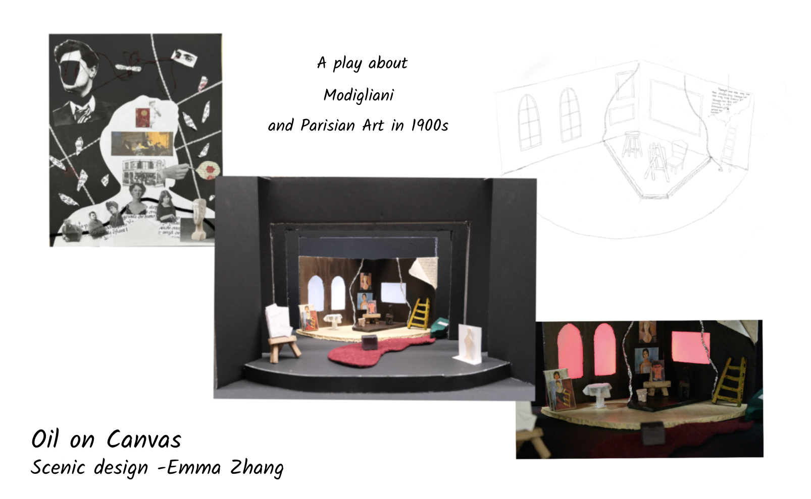

Theatrical Design
I'm interested in how designs tell stories in theatrical spaces. I mainly focus on lighting and scenic designs in theaters.
Skills: EOS Lighting Console and Lighting sketch; Scale Floor Plan Drawing and model making
